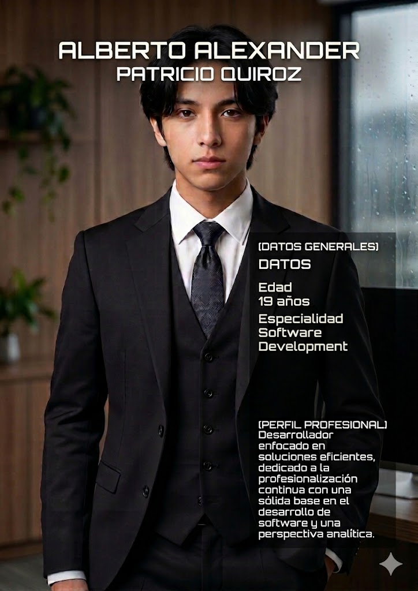

Patricio Quiroz

[ Perfil de Sujeto // Disciplina & Estilo ]
Desarrollador enfocado con una mentalidad analítica y disciplinada inspirado en el arquetipo de Choi Seung-hyo. Combina una estricta rutina de enfoque técnico con una profunda pasión por la cultura coreana, liderando proyectos digitales como CEO en la curación de contenido para medios y revistas de K-Pop. Perfil multifacético impulsado por la estética del orden visual, el código limpio y las narrativas de K-Dramas.